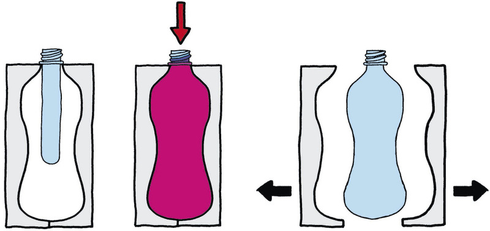

<div class="container">
  <div id="contents" class="col-md-12 main-content"><h1 xmlns="http://www.w3.org/1999/xhtml" id="toc-id-13">Recycling and manufacturing with recycled plastic</h1>
    
    <p xmlns="http://www.w3.org/1999/xhtml" class="x--Body-opener">In this chapter, you will learn how
    plastic waste is recycled to make new products.</p>

    <h2 xmlns="http://www.w3.org/1999/xhtml" id="toc-id-14">Moulding recycled plastic pellets into products</h2>

    <p xmlns="http://www.w3.org/1999/xhtml" class="x--Body-Text">There are two steps to making plastic
    bottles, injection moulding and blow moulding.</p>

    
<h3 xmlns="http://www.w3.org/1999/xhtml" class="x--Head-investigation">Step 1: injection moulding to make preforms from pellets</h3>

    <p xmlns="http://www.w3.org/1999/xhtml" class="x--Body-text-1-3 para-style-override-35">
    <span>Injection moulding is used to make plastic "preforms" of
    bottles. Preforms are like small bottles with very thick walls
    that already have the neck and screw-thread of the final
    bottle. Figure 1 shows the preform for a plastic
    bottle</span>.</p>

    <p xmlns="http://www.w3.org/1999/xhtml" class="x--Body-indent-1-3 para-style-override-35">Figure 2
    shows the injection-moulding machine at different times of the
    injection-moulding process. In this picture, the plastic is the
    coloured substance. The raw material going into the machine is
    small, almost round pieces of plastic called pellets.</p>

    <p xmlns="http://www.w3.org/1999/xhtml" class="x--Body-indent">They are initially hard since they
    have not been heated yet, and are shown in blue. The plastic
    must be soft and hot for the injection process to work.</p>

    <figure xmlns="http://www.w3.org/1999/xhtml">


<figcaption>Figure 1: A preform of a plastic bottle </figcaption>
</figure>

    <p xmlns="http://www.w3.org/1999/xhtml" class="x--Body-indent">The pellets are pushed forward by a
    screw that is turned by a motor. At the same time, the pellets
    are heated until they melt. The turning force of the screw
    creates pressure that pushes or injects the molten plastic into
    the mould. Once the mould has been filled, the opening of the
    mould where the molten plastic came in is closed, and the mould
    is left to cool.</p>

    <p xmlns="http://www.w3.org/1999/xhtml" class="x--Body-indent">The plastic in the mould solidifies
    as it cools down. Once it has cooled down sufficiently, the two
    halves of the mould open so that the preform that was made can
    be taken out.</p>

    <p xmlns="http://www.w3.org/1999/xhtml" class="x--Body-indent">Answer the following question in
    connection with Figure 2.</p>

    <p xmlns="http://www.w3.org/1999/xhtml" class="x--Body-investigation-hanging">1. Find the mould and
    label it.</p>

    <p xmlns="http://www.w3.org/1999/xhtml" class="x--Body-investigation-hanging">2. Where will you put
    a heater on the machine to melt the plastic pellets? Draw an
    extra part or parts for the machine to show where the heater
    should be, and label it.</p>

    <p xmlns="http://www.w3.org/1999/xhtml" class="x--Body-investigation-hanging">3. Look carefully at a
    plastic bottle. You will find a very thin ridge where the two
    parts of the mould joined. If you cannot see it, feel around
    the neck of the bottle with your finger.Why is the mould line
    on both sides of the neck?</p>
    <hr xmlns="http://www.w3.org/1999/xhtml"/><figure xmlns="http://www.w3.org/1999/xhtml">


<figcaption>Figure 2: The injection-moulding process</figcaption>
</figure>

   
<h3 xmlns="http://www.w3.org/1999/xhtml" class="x--Head-investigation">Step 2: blow moulding to shape preforms into bottles</h3>

    <p xmlns="http://www.w3.org/1999/xhtml" class="x--Body-Text">Next, the preform goes to a
    blow-moulding machine. This machine blows hot air under high
    pressure into the preform. This heats the lower part of the
    preform so that it becomes soft and can change its shape. The
    high air pressure forces the walls of the preform to expand
    into the mould, similar to blowing up a balloon.</p>

    <figure xmlns="http://www.w3.org/1999/xhtml">


<figcaption> 3: Blow-moulding of a preform to make a plastic bottle </figcaption>
</figure>

    <p xmlns="http://www.w3.org/1999/xhtml" class="x--Body-indent">The same type of preform can be made
    into different shapes of bottles, since it can be blown into
    different moulds. But all the bottles will have the same
    screw-on cap.</p>

    <p xmlns="http://www.w3.org/1999/xhtml" class="x--Body-investigation-hanging">1. Why will all the
    different-shaped bottles fit the same cap?</p>
    <hr xmlns="http://www.w3.org/1999/xhtml"/> 

    <h2 xmlns="http://www.w3.org/1999/xhtml" id="toc-id-15">Recycling plastic to make new products</h2>

    <p xmlns="http://www.w3.org/1999/xhtml" class="x--Body-Text para-style-override-37">In Chapter 9,
    you learnt why we should recycle plastic containers and other
    products. In this chapter, you will learn how PET plastic can
    be recycled and made into a new raw material.</p>

    
<h3 xmlns="http://www.w3.org/1999/xhtml" class="x--Head-investigation">Case study: the cyclical process of recycling plastic</h3>

    <p xmlns="http://www.w3.org/1999/xhtml" class="x--Body-investigation-hanging para-style-override-24">1. Why
    should plastics be separated into different types before it can
    be recycled?</p>
    <hr xmlns="http://www.w3.org/1999/xhtml"/><p xmlns="http://www.w3.org/1999/xhtml" class="x--Body-investigation-hanging para-style-override-24">2. How
    do the recycling codes on the plastic containers help to sort
    them?</p>
    <hr xmlns="http://www.w3.org/1999/xhtml"/><p xmlns="http://www.w3.org/1999/xhtml" class="x--Body-investigation-hanging para-style-override-24">3. The
    containers are not only plastic. If you look carefully at a
    container, what other materials can you find? You can look at
    some of the containers your classmates brought to class.</p>
    <hr xmlns="http://www.w3.org/1999/xhtml"/><p xmlns="http://www.w3.org/1999/xhtml" class="x--Body-investigation-hanging">4. Are all the plastic
    containers in the bin clean? Is this important?</p>
    <hr xmlns="http://www.w3.org/1999/xhtml"/><p xmlns="http://www.w3.org/1999/xhtml" class="x--Body-investigation-hanging">5. <span>Plastic
    bottles and other containers take up a lot of space. Why is
    this a problem?</span></p>
    <hr xmlns="http://www.w3.org/1999/xhtml"/><p xmlns="http://www.w3.org/1999/xhtml" class="x--Body-investigation-hanging para-style-override-24">6. Name
    four things that need to be done to plastic waste before it
    will be suitable to turn into new products.</p>
    <hr xmlns="http://www.w3.org/1999/xhtml"/><p xmlns="http://www.w3.org/1999/xhtml" class="x--Body-indent">The illustration on the next page
    shows the plastic recycling process.</p>

    <p xmlns="http://www.w3.org/1999/xhtml" class="x--Body-indent">Each type of plastic waste is pressed
    into bales that can easily be transported. At the recycling
    factory, the plastic waste is shredded into small pieces, to
    make it easier to handle and wash.</p>

    <p xmlns="http://www.w3.org/1999/xhtml" class="x--Body-investigation-hanging para-style-override-38">7.
    Complete the systems diagram below by giving descriptions of
    the different steps of the recycling process. Hint: When
    something is recycled, it means that the output is also the
    input, since the process is a cycle or circular.</p>

    <p xmlns="http://www.w3.org/1999/xhtml"></p>
<figure xmlns="http://www.w3.org/1999/xhtml">
<figcaption>Figure 4: Systems diagram of the plastic
    bottle recycling process</figcaption>
</figure>

   <figure xmlns="http://www.w3.org/1999/xhtml">


<figcaption>Figure 5: The steps to turn waste plastic into new plastic products</figcaption>
</figure>


    <h2 xmlns="http://www.w3.org/1999/xhtml" id="toc-id-16">What have you learnt?</h2>

    <p xmlns="http://www.w3.org/1999/xhtml" class="x--Body-investigation-hanging">1. What is the raw
    material for the bottles in this process?</p>
    <hr xmlns="http://www.w3.org/1999/xhtml"/><p xmlns="http://www.w3.org/1999/xhtml" class="x--Body-investigation-hanging">2. How can consumers
    and house-owners make it easier for recyclers to process
    plastic products to make new bottles?</p>
    <hr xmlns="http://www.w3.org/1999/xhtml"/><p xmlns="http://www.w3.org/1999/xhtml" class="x--Body-investigation-hanging">3. A manufacturer can
    buy one type of preform and then make different-shaped bottles.
    How can this be done?</p>
    <hr xmlns="http://www.w3.org/1999/xhtml"/><p xmlns="http://www.w3.org/1999/xhtml" class="x--Body-investigation-hanging">4. Which type of
    moulding do you think is used to make plastic chairs?</p>
    <hr xmlns="http://www.w3.org/1999/xhtml"/><p xmlns="http://www.w3.org/1999/xhtml" class="x--Body-investigation-hanging">5. What is the
    difference between injection moulding and blow moulding?</p>
    <hr xmlns="http://www.w3.org/1999/xhtml"/>
<h3 xmlns="http://www.w3.org/1999/xhtml" class="x--Head-investigation">Next week</h3>

    <p xmlns="http://www.w3.org/1999/xhtml" class="x--Body-Text">Over the next three weeks, you will do
    your Mini-PAT for this term. You will
    reuse old plastic bottles for a new purpose. But the bottles
    will have to be changed, so you will need to design and make
    new products from the old plastic bottles.</p>
 
 
  </div>
</div>